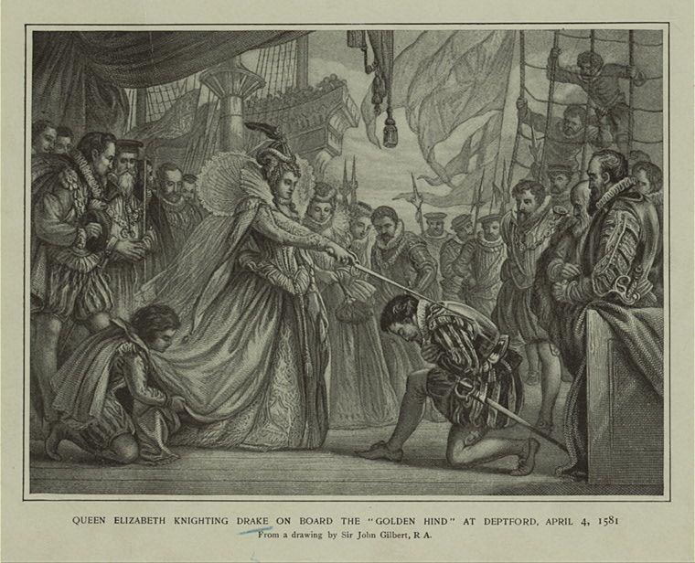
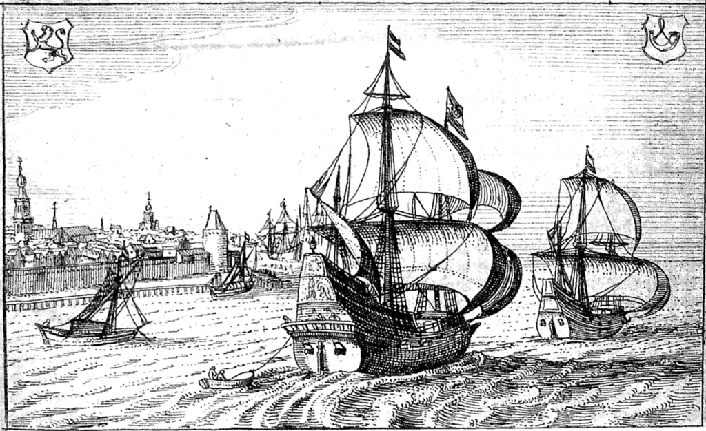
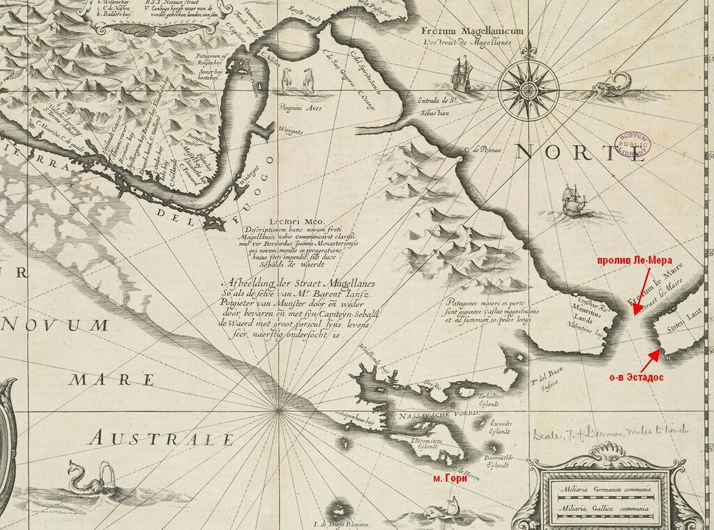
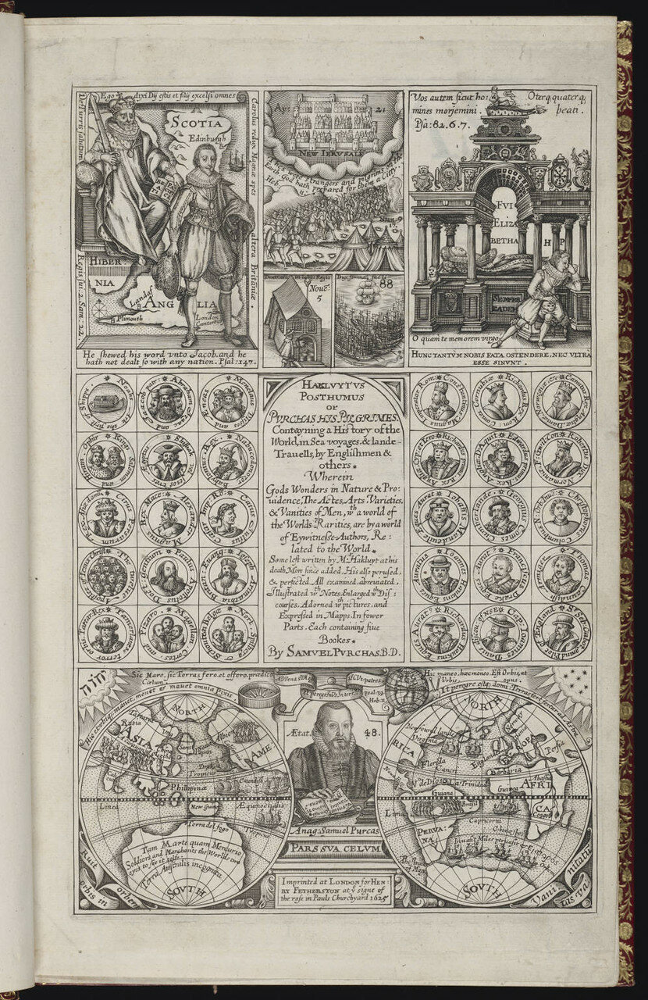
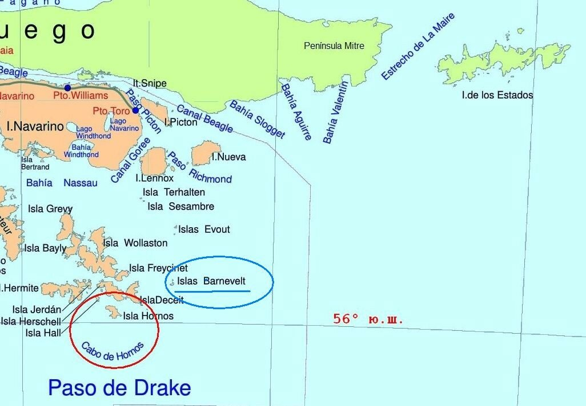
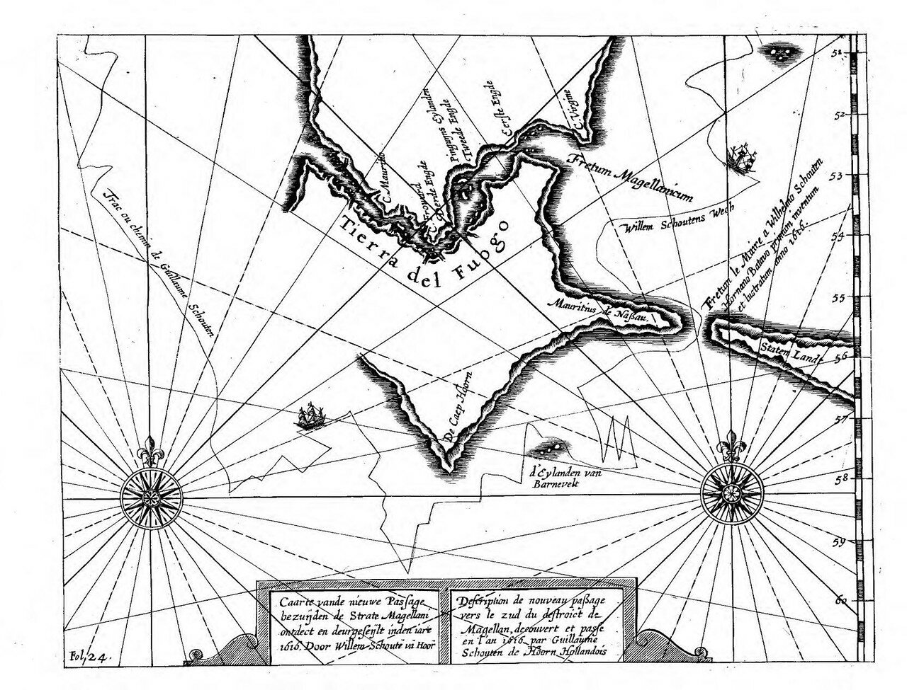
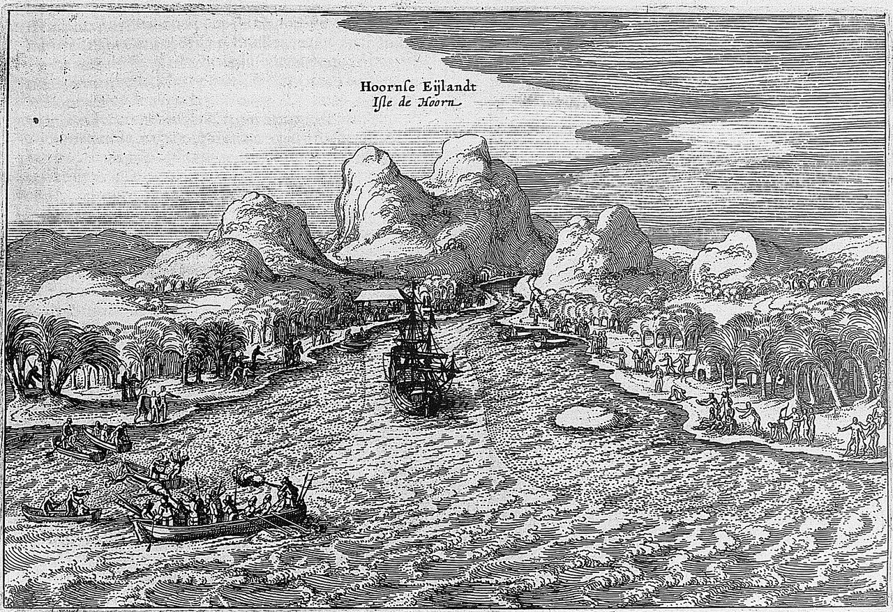

Королева Елизавета посвящает в рыцари Фрэнсиса Дрейка. (The Miriam and Ira D. Wallach Division of Art, Prints and Photographs)
Известно, что на всех кораблях ее величества королевы Англии Елизаветы в обязательном порядке вели журнал плавания. Не был исключением и «Пеликан» (переименованный во время плавания в «Золотую лань»). Из предыдущего поста мы знаем, что журнал «Золотой лани» и «большая карта» после завершения экспедиции были переданы королеве лично Дрейком. Однако затем они странным образом исчезли. Отсутствие подлинника отчета о кругосветном плавании и подлинной карты с маршрутом этого плавания породило множество спекуляций и предположений. Мы сейчас попробуем разобраться, насколько вторичные источники об экспедиции Дрейка могли отражать содержание первоисточников.
Начнем с 1625 года, когда англичане впервые публично заявили о приоритете Дрейка в исследовании Южных морей.
Поводом послужила публикация в 1618 году материалов голландской кругосветной экспедиции 1615—1616 гг. Якоба Лемера (Jacob le Maire) и Виллема Схаутена (Willem Cornelisz Schouten), которые на кораблях «Эндрахт» и «Хорн» обошли вокруг Огненной Земли и открыли пролив Ле-Мера, отделяющий ее от острова Эстадос (Isla de los Estados, Земля Штатов – естественно, не американских).

Корабли экспедиции Лемера и Схаутена покидают голландский порт Хорн в 1615 г.
Схаутен и Лемер посчитали, что остров Эстадос является северной оконечностью Южного материка.

Остров Эстадос и пролив Ле-Мер. Карта, изданная в 1633 г. (Hondius, Hendrik)
Англичане были уязвлены. Английский клерикальный писатель и хронист Сэмюэл Перчес (Samuel Purchas) в 1625 году опубликовал книгу, показывающую роль соотечественников в недавних географических открытиях. Эта работа была заявлена как продолжение трудов Ричарда Хаклюйта, который скончался в 1616 году и к трудам которого мы обратимся позже.

Титульный лист книги Сэмюэла Перчеса Hakluytus Posthumus, or Purchas his Pilgrimes (London, 1625)
Комментируя претензии голландцев на приоритет в географических открытиях к югу от Магелланова пролива, Перчес приводит название, которое дано Дрейком «так называемому проливу Ле-Мер» и прилегающим морям и которое он видел на карте Дрейка в галерее королевы Елизаветы. Вот текст из сочинения Перчеса:
I adde their New Straights Southwards from those of Magelane were dis¬covered by Drake, as in the Map of Sir Francis Drakes Voyage presented to Queene Elizabeth, still hanging in His Majesties Gallerie at White Hall, neere the Privie Chamber, and by that Map (wherein is Cabotas Picture, the first and great Columbus for the Northerne World) may be seene. In which Map, the South of the Magelane Straits is not a Continent, but many Ilands, and the very same which they have stiled in their Straits, Barnevels Ilands and long before beene named by the most auspicate of Earthly Names, and let themselves be Judges, with which the other is as little worthie to be mentioned, as a kind Mother, and an unkind Traitor. The Name Elizabeth is expressed in golden Letters, with a golden Crowne, Garter and Armes affixed: The words ascribed thereunto are these, Cum omnes ferè hanc partem Australem Continentem esse putent, pro certo sciant Insulas esse Navigantibus pervias, carumque australissimam Elizabetham a D. Francisco Draco Inventore dictam esse. The same height of 57. degrees, and South-easterly situation from the Magelan Westerne Mouth give further evidence. [The Latin inscription may be translated: Whereas almost everyone believes this to be part of the south¬ern continent, they know for certain these islands to be passable by navi¬gators, of which the most southerly island is named Elizabeth by its discoverer, Sir Francis Drake.)
И еще я добавлю, что их [голландцев] Новые проливы к югу от пролива Магеллана были открыты Дрейком, как это видно на карте путешествия сэра Фрэнсиса Дрейка, представленной королеве Елизавете, которая и сейчас висит в галерее Ее Величества в Уайтхолле, рядом с палатой Тайного Совета, по соседству с картой [Себастьяна] Кабота, первого и великого Колумба Северной Америки. На этой карте к югу от Магелланова пролива находится не континент, а много островов, и тот самый, который они называют Barnevels Ilands, задолго до них был назван самым предсказуемым из мирских имен, по сравнению с которым нет смысла упоминать другое, как рядом с доброй Матерью упоминать злого Изменника. Имя Елизааветы выписано золотыми буквами, рядом с золотой короной и орденом подвязки с надписью:
Cum omnes ferè hanc partem Australem Continentem esse putent, pro certo sciant Insulas esse Navigantibus pervias, carumque australissimam Elizabetham a D. Francisco Draco Inventore dictam esse.
Та же широта 57 градусов и расположение к юго-западу от западного выхода из Магелланова пролива дают дополнительные доказательства.
Перевод (приблизительный) приведенной в цитате латинской записи:
«Несмотря на то, что почти все считают ее (эту землю) частью южного континента, стало известно, что между некоторыми из этих земель можно пройти на кораблях; самые южные острова названы их открывателем именем Елизаветы. Сэр Френсис Дрейк.»
Сделаем некоторые примечания к приведенному отрывку из Перчеса.
Остров, который в цитате назван Barnevels Ilands – это остров в архипелаге Огненная Земля, который сейчас носит название Islas Barnevelt.

Вот как этот остров, а заодно и открытый экспедицией голландцев мыс Горн, выглядят на карте из отчета об этой экспедиции

.
Иллюстрация из книги Schouten, Willem Cornelis. Journal ou description du merveilleux voyage(...])fait es années 1615,1616 et 1617(...). Издана в 1619.
А вот и изображение острова Горн из той же книги

«Добрая мать» - это конечно же Елизавета, а «злой изменник» - основатель Нидерландской Ост-Индской компании (1602) Йохан ван Олденбарневелт, государственный деятель и дипломат, инициатор экспедиции Лемера и Схаутена, который был обвинен в государственной измене и казнен 13 мая 1619 г. в Гааге.
Мы продолжим обсуждение этой темы в следующий раз.